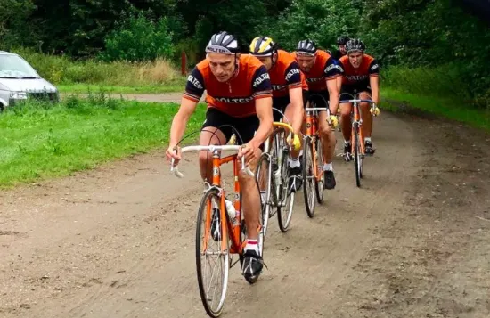

Optakt: Ronde van Borum 2022

Søndag den 3. april sender Squadra Molteni et hold knivskarpe forårsklassikerspecialister til den danske forårsklassiker Ronde van Borum.
– Squadra Molteni stiller til start med et formstærkt 7-mandshold bestående af vores forårsklassikerspecialister Eigil Leegaard, Jens Langergaard, Jeppe Thiemer, Kristian Blume, Lars Munch, Svend Seegert og Niels Bjørnsteen, fortæller Sportsdirektør Klaus Maarup Kjærsgaard
Ronde van Borum er en hyldest til cykelklassikeren Ronde van Vlaanderen – og år også til “Løven af Flandern”, tidligere verdensmester og 3 gange vinder af Ronde van Vlaanderen, Johan Museeuw, der stiller til start i dette års Ronde van Borum.
– Det ændre ikke meget ved vores taktik. Vi vil selvfølgelig holde godt øje med Museeuw, og Kristian Blume får også til opgave, at sidde som en skygge af Museeuw. Men det gælder først og fremmes om at få kørt “Det Orange Grustog” i position til de første gruspaveer. Herefter ved vi, at det kun ganske få ryttere i feltet, der kan følge med os, afslører Kaptajn Bjørnsteen.


Ronde van Borum køres på én lang rundstrækning på 99 km, der indeholder 4 berygtede grus pavéer. Men efter den suveræne sejr ved Omloop Het Volk Aarhus er Squadra Molteni klare favoritter til at vinde Ronde van Borums stålklasse.
Ronde van Borum har start og mål ved Skivholme Forsamlingshus vest for Aarhus.